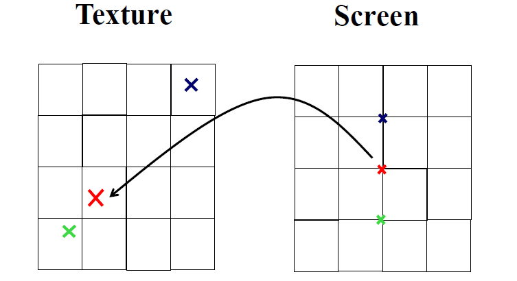
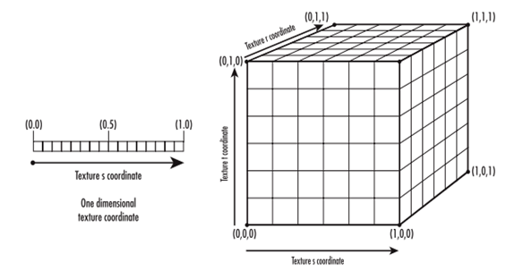
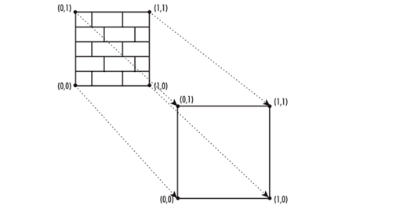
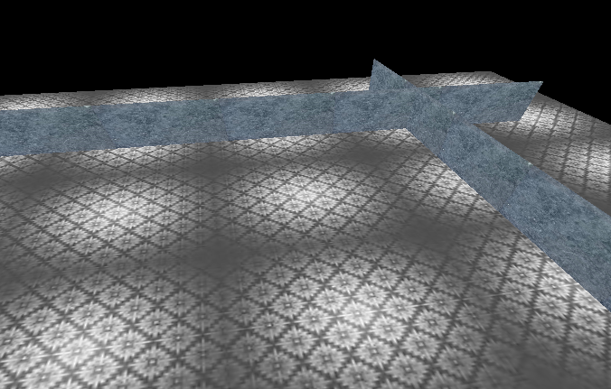

Course Website
Free Style
Texture mapping is a method for defining high frequency detail, surface texture, or color information on a computer-generated graphic or 3D model.
To map the texture to the geometry, first we need to load the texture into memory, and after loading the texture becomes part of the OpenGL's current texture state. OpenGL provides the following three methods to load the texture from the memory buffer:
To map textures to geometries, we need to tell how OpenGL maps these textures. Texture elements are not placed according to the position in memory (unlike pixels). Texture uses more abstract texture coordinates to determine where the texture elements are placed. The texture coordinates contain x, y, z, and w, which are similar to the vertex coordinates of the s, t, r, and q axes, to support a 1-dimensional to 3-dimensional texture. Q is used to scale the texture coordinates, that is, the coordinates of the normalized coordinates are s / q, t / q, r / q, the default is 1.0. The texture coordinate is a floating point with a range of [0.0,1.0]. The following figure explains how texture coordinates place texture elements:
We can set the texture coordinates through the glTexCoord function, which is similar to setting the vertex coordinates. Here are three commonly used glTexCoord variants:
Note that the texture coordinates are like the surface normals, and the color values are set before the vertices are set. Use these functions above to set texture coordinates for each vertex. Then OpenGL will scale the texture as needed to map to the geometry. The following figure maps the two-dimensional texture to a square GL_QUADE element, noting that the four corners of the texture correspond to the four corners of the square.
The floor and the wall have different texture.
